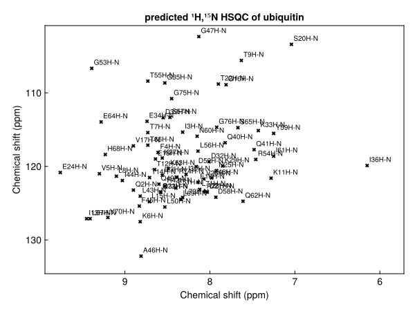
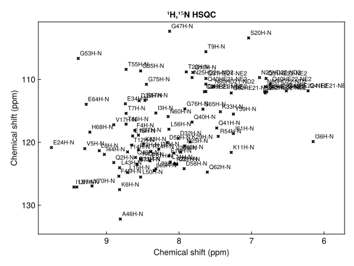
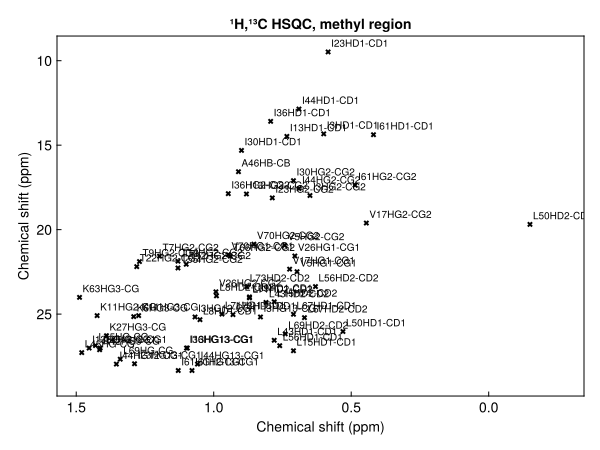
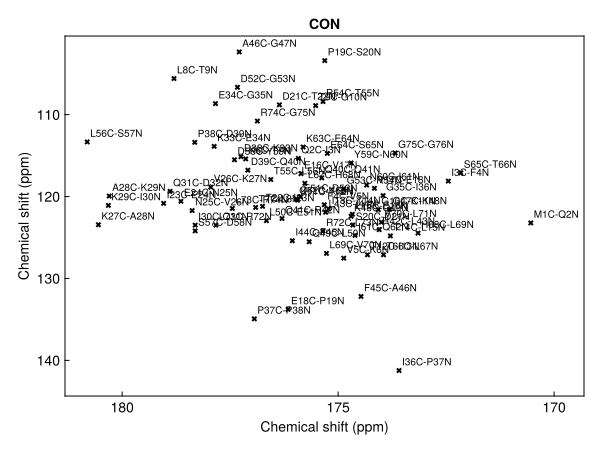
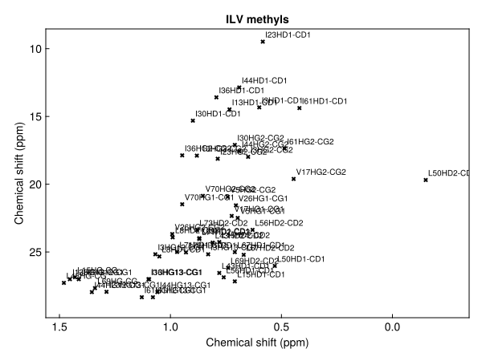
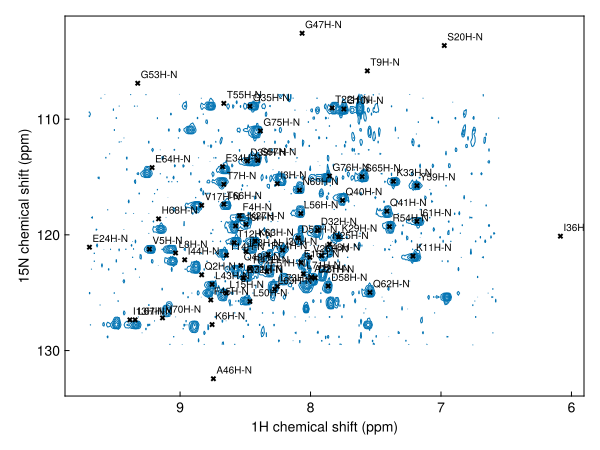

Peak lists from the BMRB
loadbmrb reads the assigned chemical shifts of a BMRB entry, and peaklist assembles them into the peaks expected in any correlation experiment. The predicted list can be plotted, overlaid on a spectrum, registered onto it, and saved as the starting point for an analysis.
For a worked example, see Assigning ubiquitin from the BMRB.
Predicting a spectrum
Give the BMRB entry number and the atoms correlated in each dimension, direct dimension first, and plot the result:
using NMRTools, CairoMakie
hsqc = loadbmrb(17769, "H", "N") # backbone ¹H,¹⁵N HSQC peaks of ubiquitin
nmrplot(hsqc)This downloads the entry from bmrb.io. The shifts of entry 17769 come with NMRTools, so here we read the bundled copy instead:
using NMRTools, CairoMakie
hsqc = loadbmrb(exampledata("BMRB_ubiquitin"; path=true), "H", "N")
fig = nmrplot(hsqc; title="predicted ¹H,¹⁵N HSQC of ubiquitin")
The peaks are labelled by residue, and can be overlaid on a spectrum with nmrplot!, registered onto it with register!, or saved with savepeaks.
Loading shifts
Given an entry number, loadbmrb downloads the entry's NMR-STAR file from bmrb.io. Given a file name, it reads a local NMR-STAR (v3) file. With dimension arguments, it builds a peak list straight away:
shifts = loadbmrb(17769) # download the shifts of entry 17769
shifts = loadbmrb("bmr17769_3.str") # read a local NMR-STAR file
hsqc = loadbmrb(17769, H1, N15) # download and build an ¹⁵N HSQC peak listAn entry may hold several shift lists, for example under different sample conditions. The first is used, with a warning, unless the list keyword selects another by its ID.
The examples on this page use the shifts of ubiquitin (entry 17769), which come with NMRTools:
shifts = exampledata("BMRB_ubiquitin")
length(shifts)1001A shift list is a Vector{ChemicalShift}. Each ChemicalShift has fields residue, residuename, atom, nucleus, shift and error.
Building peak lists
Load the shifts once and build as many lists as needed with peaklist. Its arguments give the dimensions in spectrum order, direct dimension first.
Nuclei: every bonded pair
Passing nuclei gives every directly bonded X–H pair, which is what an HSQC shows:
nh = peaklist(shifts, H1, N15)
length(nh)88fig = nmrplot(nh; title="¹H,¹⁵N HSQC")
For ¹⁵N this includes side-chain NH and NH₂ groups; for ¹³C every CH, CH₂ and CH₃ group. Methyl and methylene protons with identical shifts give a single peak:
methylregion(p) = -0.5 < ppm(p, 1) < 1.5 && 5 < ppm(p, 2) < 30
ch = peaklist(shifts, H1, C13)
fig = nmrplot(filter(methylregion, ch); title="¹H,¹³C HSQC, methyl region")
Atom names: specific correlations
Atom names select specific atoms. "H", "N" gives only the backbone amides:
backbone = peaklist(shifts, "H", "N")
length(backbone)72An atom name can carry an offset to a neighbouring residue, so any triple-resonance correlation can be written down directly:
| Experiment | Call |
|---|---|
| ¹H,¹⁵N HSQC (backbone) | peaklist(shifts, "H", "N") |
| HNCO | peaklist(shifts, "H", "N", "C-1") |
| HNCA, i peaks | peaklist(shifts, "H", "N", "CA") |
| HNCA, i−1 peaks | peaklist(shifts, "H", "N", "CA-1") |
| HN(CO)CA | peaklist(shifts, "H", "N", "CA-1") |
| HNCACB (Cα and Cβ, i and i−1) | reduce(vcat, [peaklist(shifts, "H", "N", a) for a in ("CA", "CB", "CA-1", "CB-1")]) |
| CBCA(CO)NH | vcat(peaklist(shifts, "H", "N", "CA-1"), peaklist(shifts, "H", "N", "CB-1")) |
| CON | peaklist(shifts, "C-1", "N") |
| ¹H,¹³Cα | peaklist(shifts, "HA", "CA") |
BMRB entries name the carbonyl carbon "C" and the amide proton "H"; "CO" and "HN" are accepted too. A CON correlates the carbonyl of residue i−1 with the nitrogen of residue i:
con = peaklist(shifts, "C-1", "N")
fig = nmrplot(con; title="CON")
A residue whose shifts are missing for any atom in the correlation is left out of the list.
1D lists
A single nucleus gives every shift of that nucleus as a 1D peak list, the expected lines of a 1D spectrum:
c13 = peaklist(shifts, C13)
length(c13)348Selecting residues
A shift list is a vector, so residues can be selected with filter before building peaks. For the methyl region of an Ile, Leu, Val-labelled sample:
ilv = filter(s -> s.residuename in ("ILE", "LEU", "VAL"), shifts)
methyls = filter(p -> ppm(p, 1) < 1.5 && ppm(p, 2) < 30, peaklist(ilv, H1, C13))
fig = nmrplot(methyls; title="ILV methyls")
Labels
Peaks are labelled by residue and atom: L8H-N for an amide, M1C-Q2N for a CON peak spanning two residues, V26HG1-CG1 for a methyl. Labels are kept through registration and saving.
label.(con[1:3])3-element Vector{String}:
"M1C-Q2N"
"Q2C-I3N"
"I3C-F4N"Overlaying and registering
nmrplot! overlays a predicted list on a spectrum. BMRB shifts were measured under the deposited sample conditions and referencing, so expect a systematic offset; register! finds and removes it, and register returns a moved copy:
hnca = exampledata("3D_HNCA")
hn_proj = dropdims(maximum(hnca; dims=F3Dim); dims=F3Dim) / 3 # ¹H,¹⁵N projection
moved = register(backbone, hn_proj)
fig, ax, _ = nmrplot(hn_proj; title="")
nmrplot!(ax, moved)[ Info: Peak list shifted by -0.0656041, 0.229641 ppm
See Register a peak list onto a spectrum for the options.
Saving
savepeaks writes a list as an NMRAnalysis.jl peaklist.csv or a Sparky .list:
savepeaks("ubiquitin-hsqc.csv", moved)The pipeline form chains the steps:
loadbmrb(17769, H1, N15) |> register(spec) |> savepeaks("bmrb.csv")